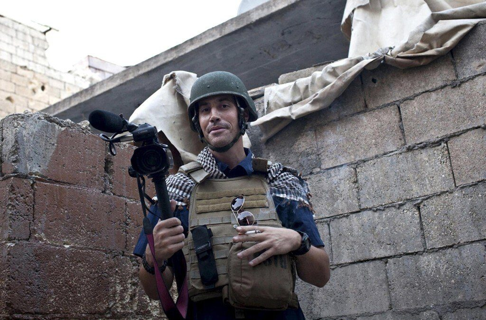

A few months ago the Dart Center for Trauma and Journalism gathered together some of the top media organizations in the world and hashed out principles for ethical conduct for freelancers and publications that operate in conflict zones. The guidelines are not legally binding, but they are an important first step in reforming the often-broken relationship between publications, journalists and the stories they both want to get into print. As I’ve written over the last year, bad contracts, kill fees and uncertain payments often push freelance writers to take additional risks in conflict zones that can either result in bad reporting, or sometimes even a journalist’s life.
The guidelines issue recommendations for medical training, protective gear, risk assessment as well as transparent payment policies, and credit. They also agree that publications should be responsible for ransom and evacuation of freelancers in the same way that they would be for their own employees. These guidelines are a huge step forward from the previous era where news organizations might simply disavow a freelance writer or photographer who got in trouble while on assignment.
So far there are 60 signatories to the document, but there are still a few notable exceptions that routinely have freelance writers operating in potentially dangerous areas. It’s time to urge The New York Times, National Public Radio, Conde Nast, Wenner Media, Atlantic Media, and American Public Media to stand up for the safety of the the people who put their lives in their name.
Like many non-binding documents, only time will tell if they signatories are ready to make this more than an on-paper commitment, but something they will act on during a crisis. I have hope that they will.
I’ll post the complete guidelines and signatories below. Please share them.
FOR JOURNALISTS ON DANGEROUS ASSIGNMENTS:
1. Before setting out on any assignment in a conflict zone or any dangerous environment, journalists should have basic skills to care for themselves or injured colleagues.
2. We encourage all journalists to complete a recognized news industry first aid course, to carry a suitable first-aid kit and continue their training to stay up-to-date on standards of care and safety both physical and psychological. Before undertaking an assignment in such zones, journalists should seek adequate medical insurance covering them in a conflict zone or area of infectious disease.
3. Journalists in active war zones should be aware of the need and importance of having protective ballistic clothing, including armored jackets and helmets. Journalists operating in a conflict zone or dangerous environment should endeavor to complete an industry-recognized hostile environment course.
4. Journalists should work with colleagues on the ground and with news organizations to complete a careful risk assessment before traveling to any hostile or dangerous environment and measure the journalistic value of an assignment against the risks.
5. On assignment, journalists should plan and prepare in detail how they will operate including identifying routes, transport, contacts and a communications strategy with daily check-in routines with a colleague in the region or their editor. Whenever practical, journalists should take appropriate precautions to secure mobile and Internet communications from intrusion and tracking.
6. Journalists should work closely with their news organizations, the organization that has commissioned them, or their colleagues in the industry if acting independently, to understand the risks of any specific assignment. In doing so, they should seek and take into account the safety information and travel advice of professional colleagues, local contacts, embassies and security personnel. And, likewise, they should share safety information with colleagues to help prevent them harm.
7. Journalists should leave next of kin details with news organizations, ensuring that these named contacts have clear instructions and action plans in the case of injury, kidnap or death in the field.
FOR NEWS ORGANIZATIONS MAKING ASSIGNMENTS IN DANGEROUS PLACES:
1. Editors and news organizations recognize that local journalists and freelancers, including photographers and videographers, play an increasingly vital role in international coverage, particularly on dangerous stories.
2. Editors and news organizations should show the same concern for the welfare of local journalists and freelancers that they do for staffers.
3. News organizations and editors should endeavor to treat journalists and freelancers they use on a regular basis in a similar manner to the way they treat staffers when it comes to issues of safety training, first aid and other safety equipment, and responsibility in the event of injury or kidnap.
4. Editors and news organizations should be aware of, and factor in, the additional costs of training, insurance and safety equipment in war zones. They should clearly delineate before an assignment what a freelancer will be paid and what expenses will be covered.
5. Editors and news organizations should recognize the importance of prompt payment for freelancers. When setting assignments, news organizations should endeavor to provide agreed upon expenses in advance, or as soon as possible on completion of work, and pay for work done in as timely a manner as possible.
6. Editors and news organizations should ensure that all freelance journalists are given fair recognition in bylines and credits for the work they do both at the time the work is published or broadcast and if it is later submitted for awards, unless the news organization and the freelancer agree that crediting the journalist can compromise the safety of the freelancer and/or the freelancer’s family.
7. News organizations should not make an assignment with a freelancer in a conflict zone or dangerous environment unless the news organization is prepared to take the same responsibility for the freelancer’s wellbeing in the event of kidnap or injury as it would a staffer. News organizations have a moral responsibility to support journalists to whom they give assignments in dangerous areas, as long as the freelancer complies with the rules and instructions of the news organization.
In conclusion, we, the undersigned, encourage all staff and freelance journalists and the news organizations they work with to actively join in a shared commitment to safety and a new spirit of collegiality and concern.
SIGNATORY ORGANIZATIONS
Agence France Press
Al-Monitor
American Society of Journalists and Authors
Association of European Journalists (Bulgaria)
The Associated Press
Belarusian Association of Journalists
Blink
Bloomberg
British Broadcasting Corporation
Canadian Journalism Forum on Violence and Trauma
Center for Journalism and Public Ethics (Mexico)
Committee to Protect Journalists
Danish Union of Journalists
Dart Center for Journalism and Trauma
Ena News Agency
European Federation of Journalists
Foreign Correspondents’ Club (Hong Kong)
Foro de Periodismo Argentino
Frontline Club
Frontline Freelance Register
The Frontliner (Albania)
Global Journalist Security
GlobalPost
The GroundTruth Project
Guardian News and Media Group
International Center for Journalists
International News Safety Institute
International Press Institute
International Women’s Media Foundation
James W. Foley Legacy Foundation
Journalistic Freedoms Observatory (Iraq)
Journalists in Danger (Kazakhstan)
Mashable
McClatchy DC
Miami Herald
National Press Club
National Press Photographers Association
National Union of Journalists-Philippines
NewsweekNOS News (Netherlands)
Online News Association
Overseas Press Club of America
Overseas Press Club Foundation
PBS FrontlinePress Emblem Campaign (Switzerland)
Public Radio International’s The World
Pulitzer Center on Crisis Reporting
Reporters Instructed in Saving Colleagues
Reporters Without Borders
Reuters
Rory Peck TrustSecurity First (UK)
Society of Professional Journalists
Storyhunter
Trauma Training for Journalists
Union of Journalists in Israel
USA TodayVideo News (Japan)
Words After War
Zuma Press
News organizations, journalist associations or advocacy groups interested in joining these guidelines should contact David Rohde, david.rohde@thomsonreuters.com.
– See more at: http://dartcenter.org/content/global-safety-principles-and-practices#sthash.vC9z1SrJ.dpuf